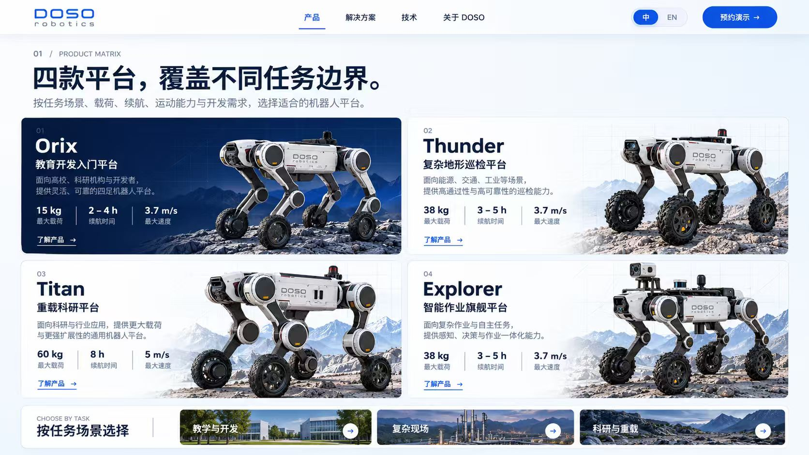

01
Orix
教育开发入门平台
面向高校、科研机构与开发者，
提供灵活、可靠的四足机器人平台。
- 15 kg
- 最大载荷
- 2–4 h
- 续航时间
- 3.7 m/s
- 最大速度
DOSO ROBOTICS /
INTELLIGENT MOBILE SYSTEMS
从机器人本体、3D 世界生成与物理仿真，
到真实任务数据回流，构建可验证、可迭代的智能系统。
01 / PRODUCT MATRIX
按任务场景、载荷、续航、运动能力与开发需求，选择适合的机器人平台。

面向高校、科研机构与开发者，
提供灵活、可靠的四足机器人平台。
面向能源、交通、工业等场景，
提供高通过性与高可靠性的巡检能力。
面向科研与行业应用，提供更大载荷
与更强扩展性的通用机器人平台。
面向复杂作业与自主任务，
提供感知、决策与作业一体化能力。
02 / FULL-STACK CAPABILITY
机器人本体 → 3D 世界生成 → 物理仿真与模型训练 → 真实任务数据
探索技术能力